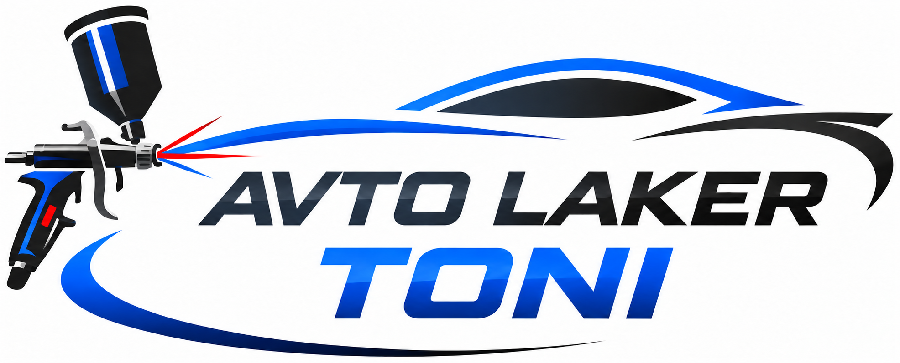
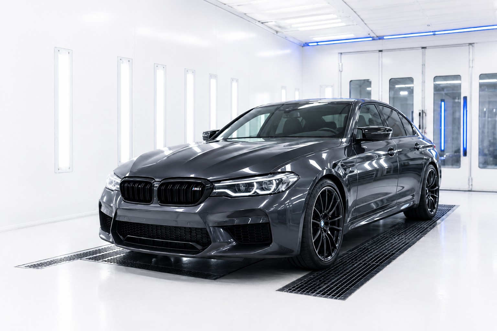
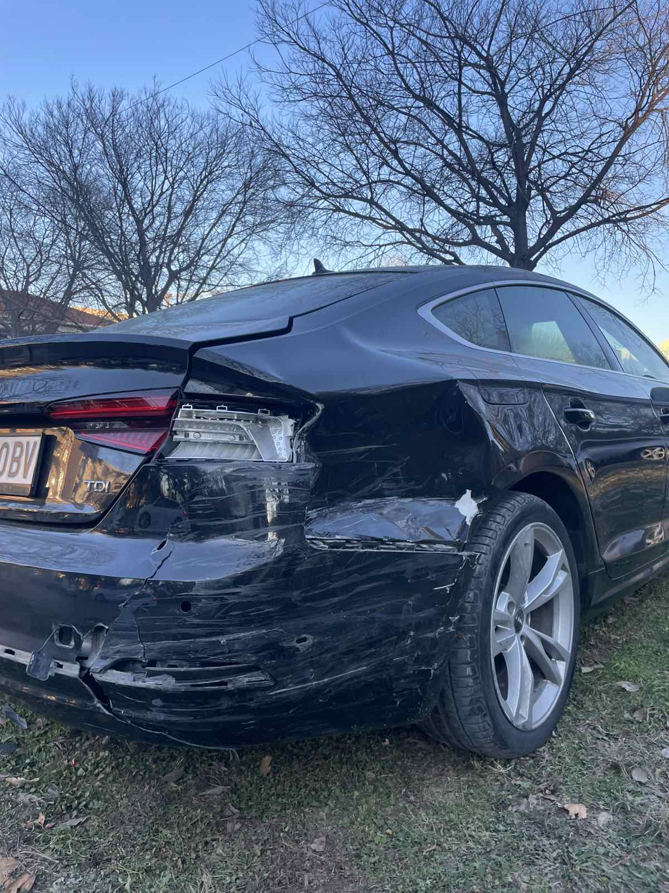
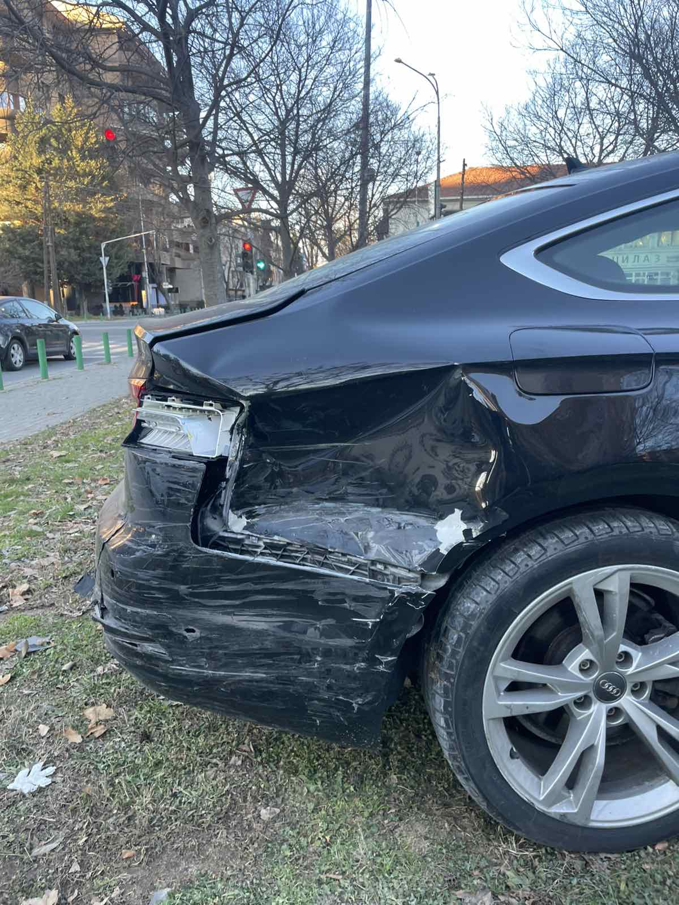
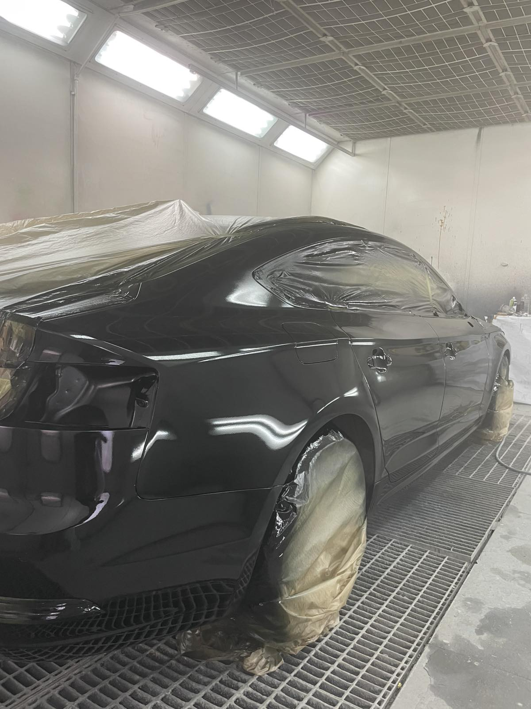
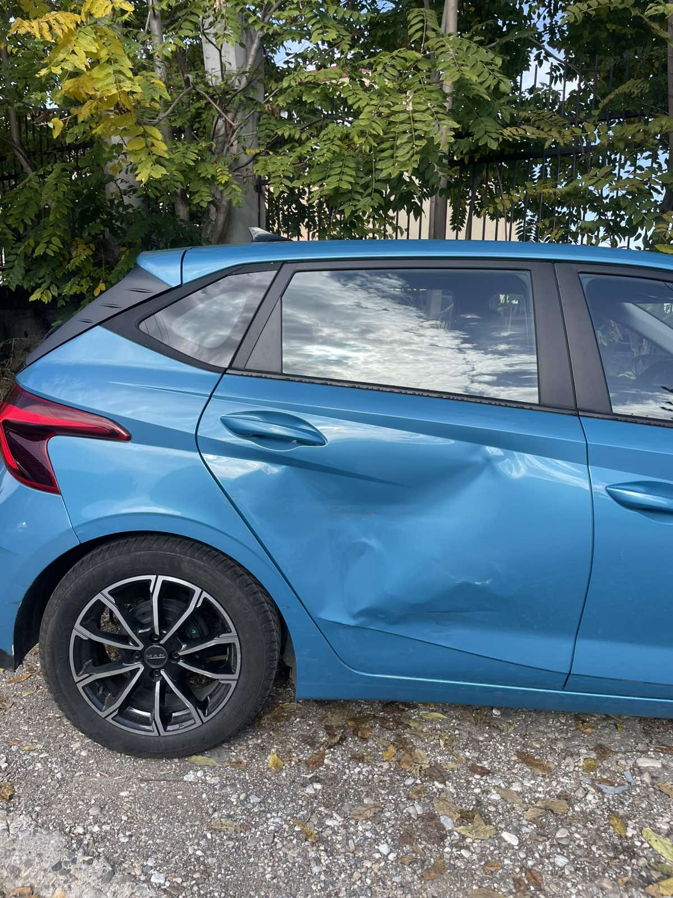
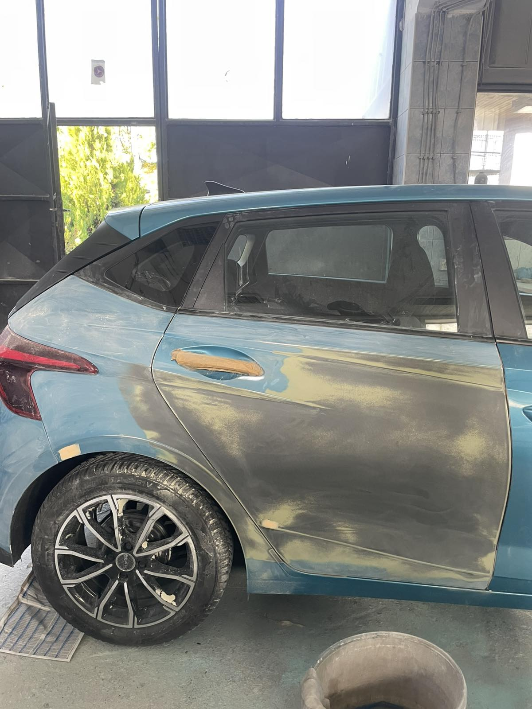
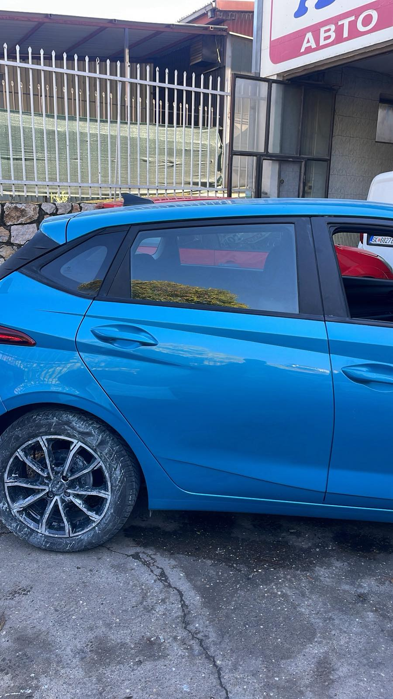

Авто-лакирање
Прецизна подготовка и нанесување боја за чист, изедначен финиш.
→
INSTAGRAM ↗АВТО-ЛАКИРАЊЕ И ПОПРАВКИ
Авто-лакирање, лимарија и поправки — со внимание на секој детал.

КВАЛИТЕТ ВО СЕКОЈ ДЕТАЛ
Добриот финиш не е случајност. Тој доаѓа од внимателна подготовка, правилен процес и око за детали.
ВИДИ ЈА РАБОТАТА НА INSTAGRAM ↗РЕАЛЕН ПРОЦЕС
Еден автомобил, прикажан од првиот преглед до работата во комората за лакирање.



ШТО ПРАВИМЕ
Прецизна подготовка и нанесување боја за чист, изедначен финиш.
→Поправка и обликување на оштетени делови од каросеријата.
→Враќање длабочина, сјај и свеж изглед на лакот.
→Мали оштетувања, гребнатини и детали што прават разлика.
→Основна механичка услуга и поправки за сигурно, исправно возење.
→РАБОТА ВО ФОКУС



АЈДЕ ДА ПОЧНЕМЕ
Испратете фотографија и краток опис на оштетувањето. Ќе продолжиме директно преку Instagram.
ИСПРАТИ ПОРАКА ↗